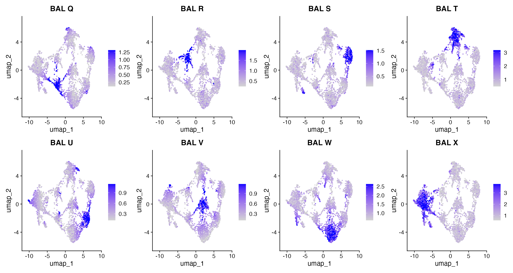
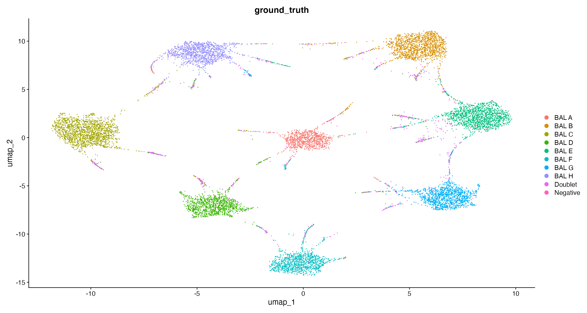
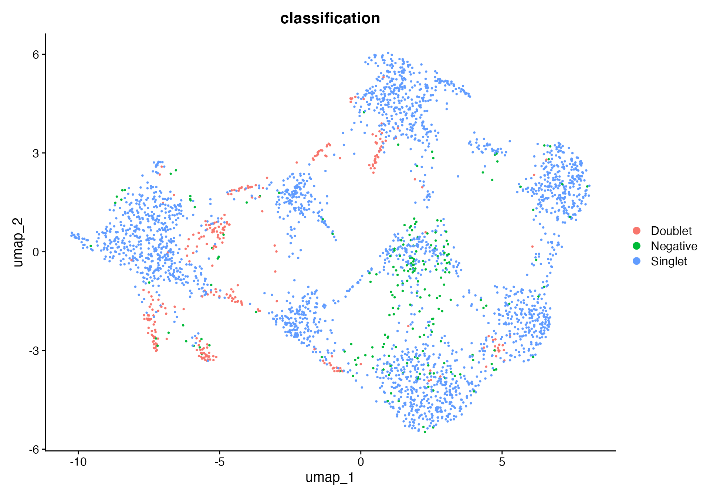
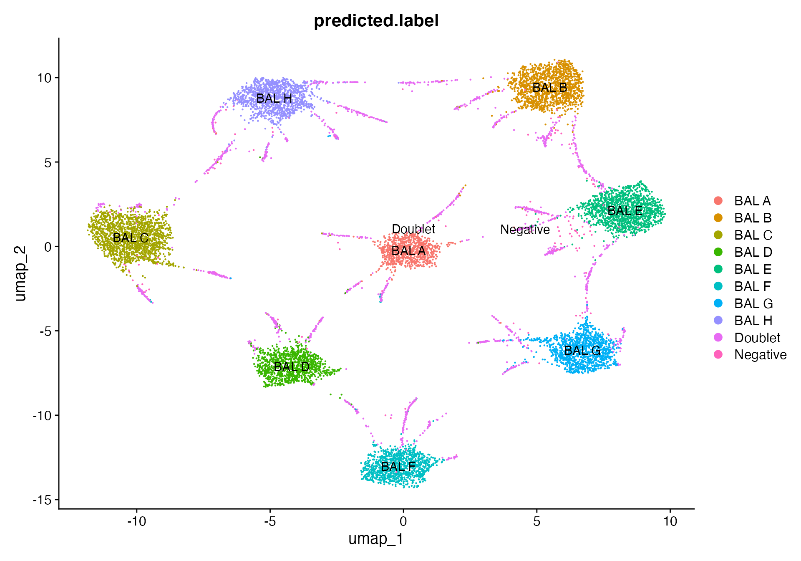
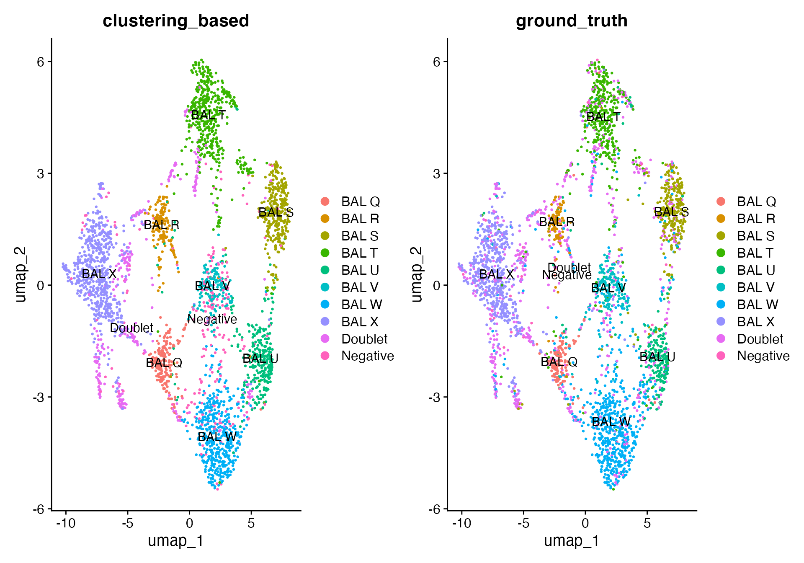
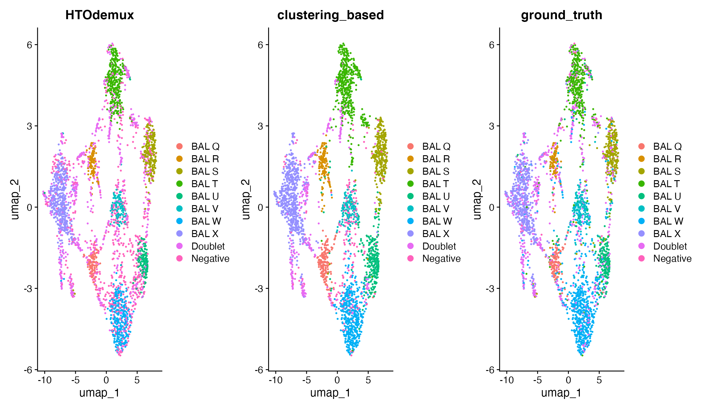
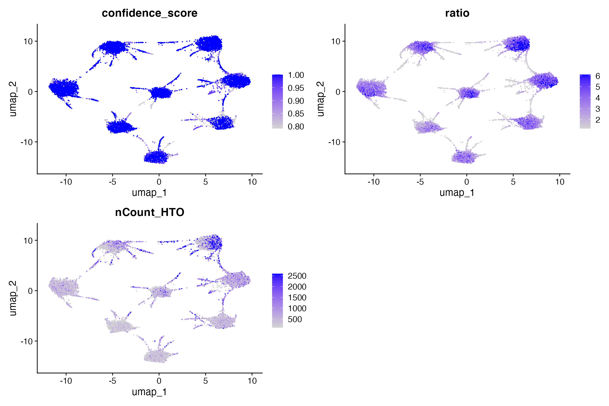
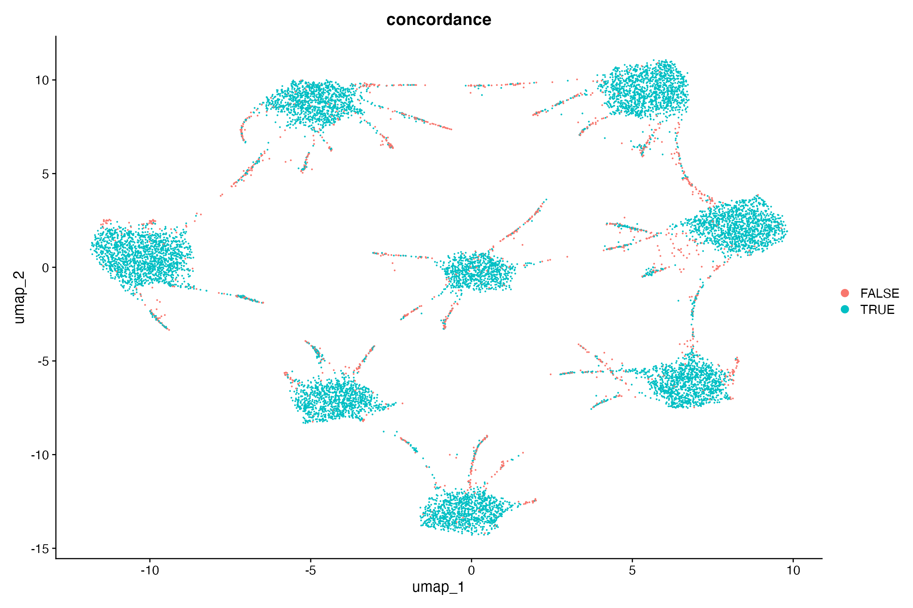

clustering-based-demultiplexing.RmdThis vignette will provide an brief introduction on how to run a newly-developed Seurat-based workflow for de-multiplexing of scRNA-seq samples. This workflow takes as input tag counts matrix with tags as rows and cell IDs as columns and return sample-of-origin for each cell. This workflow is detailed as follows:
FindClusters
function to group cells with similar tags profiles.FindAllMarkers
function.
download.file("https://raw.githubusercontent.com/Oshlack/hashtag-demux-paper/main/data/BAL_data/batch1_c1_donors.csv",
"ground_truth.csv")
download.file("https://raw.githubusercontent.com/Oshlack/hashtag-demux-paper/main/data/BAL_data/batch1_c1_hto_counts.csv",
"hto_counts.csv")
# tags IDs and their corresponding donor IDs
# https://github.com/Oshlack/hashtag-demux-paper/blob/main/analysis/BAL_analysis.Rmd
HTO_donor_list_batch1 <- list(`BAL 01` = "BAL A", `BAL 02` = "BAL B", `BAL 03` = "BAL C", `BAL 04` = "BAL D",
`BAL 05` = "BAL E", `BAL 06` = "BAL F", `BAL 07` = "BAL G", `BAL 08` = "BAL H", Doublet = "Doublet",
Negative = "Negative")
ground_truth = read.csv("ground_truth.csv", header = T, row.names = 1)
rownames(ground_truth) = ground_truth$Barcode
table(ground_truth$genetic_donor)
#>
#> BAL A BAL B BAL C BAL D BAL E BAL F BAL G BAL H
#> 899 1507 1826 1157 1553 1149 1321 1268
#> Doublet Negative
#> 823 76
hto_counts = read.csv("hto_counts.csv", header = T, row.names = 1)
rownames(hto_counts) = HTO_donor_list_batch1[rownames(hto_counts)]
seurat_object = CreateSeuratObject(counts = hto_counts, assay = "HTO", names.delim = "")
seurat_object
#> An object of class Seurat
#> 8 features across 11579 samples within 1 assay
#> Active assay: HTO (8 features, 0 variable features)
#> 1 layer present: counts
seurat_object$ground_truth = ground_truth$genetic_donor
seurat_object <- seurat_object[, sample(colnames(seurat_object), size = ncol(seurat_object), replace = F)]
assay = "HTO"
seurat_object = seurat_object %>%
NormalizeData(assay = assay, normalization.method = "CLR", margin = 2) %>%
ScaleData()
seurat_object = seurat_object %>%
RunPCA(features = rownames(seurat_object@assays[[assay]]), npcs = nrow(seurat_object@assays[[assay]]) -
1)
seurat_object = seurat_object %>%
RunUMAP(dims = 1:(nrow(seurat_object@assays[[assay]]) - 1), seed.use = 1)
FeaturePlot(seurat_object, features = rownames(seurat_object), max.cutoff = "q95", min.cutoff = "q5",
ncol = 4)
DimPlot(seurat_object, group.by = "ground_truth")
seurat_object = clustering_based_demux(seurat_object, assay = "HTO")
# table(seurat_object$classification)
seurat_object$predicted.label = seurat_object$sampleBC
seurat_object$predicted.label[seurat_object$classification == "Doublet"] = "Doublet"
DimPlot(seurat_object, group.by = "classification")
DimPlot(seurat_object, group.by = "predicted.label", label = T)
DimPlot(seurat_object, group.by = "predicted.label", label = T) + DimPlot(seurat_object, group.by = "ground_truth",
label = T)
# find cell IDs of cells predicted to be comping from donors 'BAL E' and 'BAL F'
cells = colnames(seurat_object)[seurat_object$sampleBC == "BAL E_BAL F"]
# plot expression profile of 'BAL E' and 'BAL F' tags
FeaturePlot(seurat_object, features = c("BAL E", "BAL F"), max.cutoff = "q95", min.cutoff = "q5",
ncol = 3) + DimPlot(seurat_object, cells.highlight = cells, label = F) & NoLegend()
norm_counts = seurat_object@assays$HTO$data %>%
as.matrix() %>%
t() %>%
as.data.frame()
topHTO_norm <- apply(norm_counts, 1, function(x) max(x))
secondHTO_norm <- apply(norm_counts, 1, function(x) max(x[x != max(x)]))
seurat_object$ratio = topHTO_norm/secondHTO_norm
FeaturePlot(seurat_object, features = c("confidence_score", "ratio", "nCount_HTO"), max.cutoff = "q95",
min.cutoff = "q5", ncol = 2)
seurat_object$concordance = seurat_object$predicted.label == seurat_object$ground_truth
DimPlot(seurat_object, group.by = "concordance")